Par où commencer
- Ouvrez le Guide de Confection et d'Ajustement : il explique comment imprimer les patrons et prendre les mesures.
- Choisissez un patron de la collection et téléchargez-le en A4 par parties (pour imprimer à la maison) ou pour Traceur (une seule feuille en taille réelle).
- Imprimez à 100 % (« Taille réelle ») et mesurez le carré de contrôle : il doit faire 10 × 10 cm.
- Coupez votre première toile d'essai avant d'utiliser le tissu définitif.
Guides de confection
Les conseils de couture, de modélisme, d'ajustement et de finitions, et les bonus I, II et III.
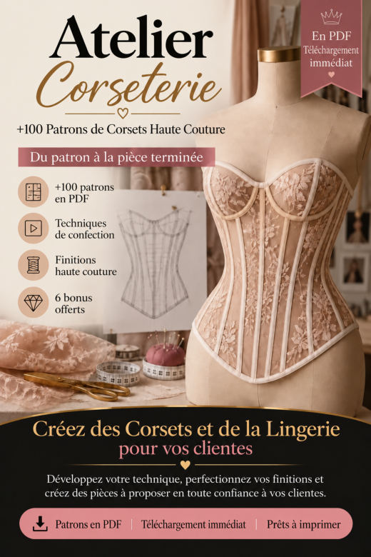
Guide de Confection et d'AjustementImprimer et assembler les patrons, prendre les mesures, adapter un patron à d'autres mesures, la toile, la couture de précision, les finitions et la présentation de pièces sur mesure.
Ouvrir le PDF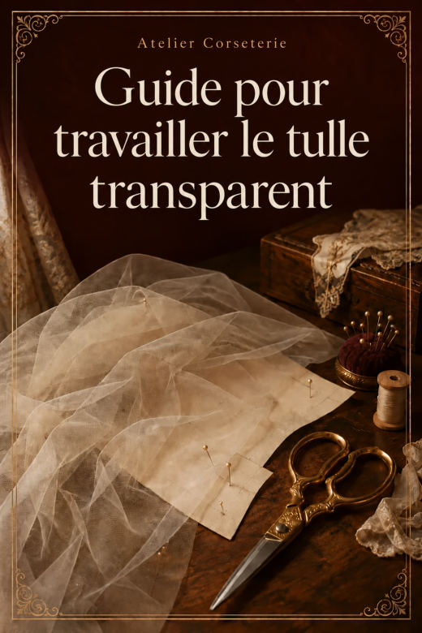
Guide pour Travailler le Tulle TransparentStabiliser, couper et coudre le tulle avec moins de déformations et plus de contrôle.
Ouvrir le PDF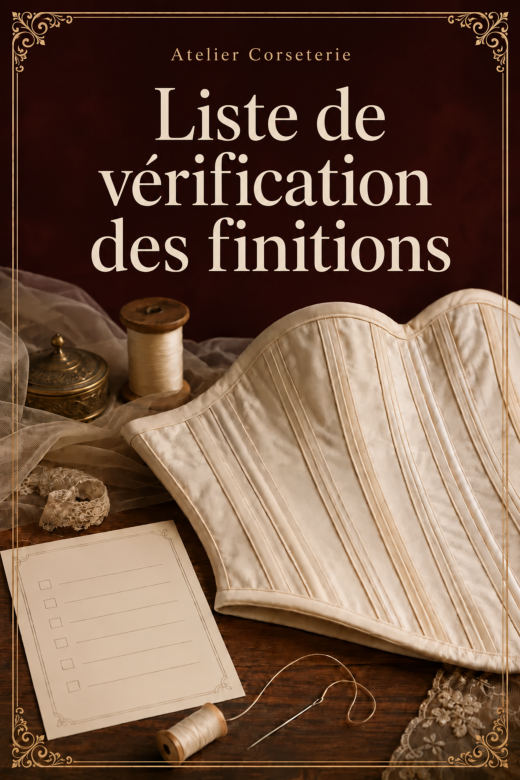
Liste de Vérification des FinitionsLes détails qui passent souvent inaperçus, à vérifier avant de photographier ou de livrer.
Ouvrir le PDF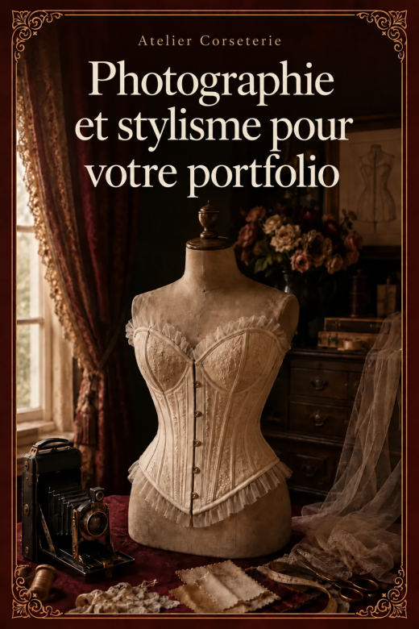
Photographie et Stylisme pour votre PortfolioLumière, fond, les 8 photos de chaque pièce, stylisme et comment construire votre portfolio avec votre téléphone.
Ouvrir le PDF
Aucun patron ne correspond. Essayez un autre mot.
Atelier Corseterie · 110 patrons de corset
110 patrons en PDF · chacun en A4 par parties et pour traceur en taille réelle.
Ceinture corset 8
 CORSET 001Ceinture Corset · 4 Panneaux · Bas Droit
CORSET 001Ceinture Corset · 4 Panneaux · Bas Droit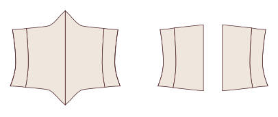
CORSET 002Ceinture Corset · 4 Panneaux · Bas en Pointe CORSET 003Ceinture Corset · 4 Panneaux · Bas Arrondi
CORSET 003Ceinture Corset · 4 Panneaux · Bas Arrondi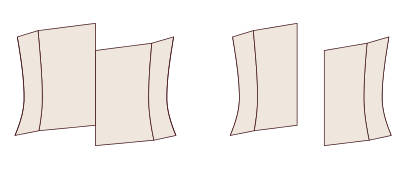
CORSET 004Ceinture Corset · 4 Panneaux · Bas Asymétrique CORSET 005Ceinture Corset · 5 Panneaux · Bas Droit
CORSET 005Ceinture Corset · 5 Panneaux · Bas Droit CORSET 006Ceinture Corset · 5 Panneaux · Bas en Pointe
CORSET 006Ceinture Corset · 5 Panneaux · Bas en Pointe CORSET 007Ceinture Corset · 5 Panneaux · Bas Arrondi
CORSET 007Ceinture Corset · 5 Panneaux · Bas Arrondi CORSET 008Ceinture Corset · 5 Panneaux · Bas Asymétrique
CORSET 008Ceinture Corset · 5 Panneaux · Bas Asymétrique
Serre-taille 12
 CORSET 009Serre-Taille · 5 Panneaux · Bas Droit
CORSET 009Serre-Taille · 5 Panneaux · Bas Droit CORSET 010Serre-Taille · 5 Panneaux · Bas en Pointe
CORSET 010Serre-Taille · 5 Panneaux · Bas en Pointe CORSET 011Serre-Taille · 5 Panneaux · Bas Arrondi
CORSET 011Serre-Taille · 5 Panneaux · Bas Arrondi CORSET 012Serre-Taille · 5 Panneaux · Bas Long sur les Hanches
CORSET 012Serre-Taille · 5 Panneaux · Bas Long sur les Hanches CORSET 013Serre-Taille · 6 Panneaux · Bas Droit
CORSET 013Serre-Taille · 6 Panneaux · Bas Droit CORSET 014Serre-Taille · 6 Panneaux · Bas en Pointe
CORSET 014Serre-Taille · 6 Panneaux · Bas en Pointe CORSET 015Serre-Taille · 6 Panneaux · Bas Arrondi
CORSET 015Serre-Taille · 6 Panneaux · Bas Arrondi CORSET 016Serre-Taille · 6 Panneaux · Bas Long sur les Hanches
CORSET 016Serre-Taille · 6 Panneaux · Bas Long sur les Hanches CORSET 017Serre-Taille · 7 Panneaux · Bas Droit
CORSET 017Serre-Taille · 7 Panneaux · Bas Droit CORSET 018Serre-Taille · 7 Panneaux · Bas en Pointe
CORSET 018Serre-Taille · 7 Panneaux · Bas en Pointe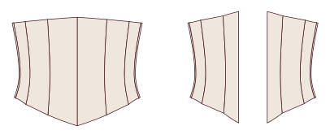
CORSET 019Serre-Taille · 7 Panneaux · Bas Arrondi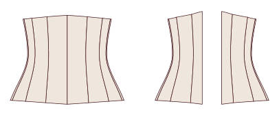
CORSET 020Serre-Taille · 7 Panneaux · Bas Long sur les Hanches
Sous-poitrine classique 16
 CORSET 021Sous-Poitrine Classique · 5 Panneaux · Bas Droit
CORSET 021Sous-Poitrine Classique · 5 Panneaux · Bas Droit CORSET 022Sous-Poitrine Classique · 5 Panneaux · Bas en Pointe
CORSET 022Sous-Poitrine Classique · 5 Panneaux · Bas en Pointe CORSET 023Sous-Poitrine Classique · 5 Panneaux · Bas Arrondi sur les Hanches
CORSET 023Sous-Poitrine Classique · 5 Panneaux · Bas Arrondi sur les Hanches CORSET 024Sous-Poitrine Classique · 5 Panneaux · Bas en Double Pointe
CORSET 024Sous-Poitrine Classique · 5 Panneaux · Bas en Double Pointe CORSET 025Sous-Poitrine Classique · 6 Panneaux · Bas Droit
CORSET 025Sous-Poitrine Classique · 6 Panneaux · Bas Droit CORSET 026Sous-Poitrine Classique · 6 Panneaux · Bas en Pointe
CORSET 026Sous-Poitrine Classique · 6 Panneaux · Bas en Pointe CORSET 027Sous-Poitrine Classique · 6 Panneaux · Bas Arrondi sur les Hanches
CORSET 027Sous-Poitrine Classique · 6 Panneaux · Bas Arrondi sur les Hanches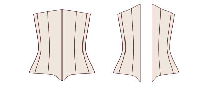
CORSET 028Sous-Poitrine Classique · 6 Panneaux · Bas en Double Pointe CORSET 029Sous-Poitrine Classique · 7 Panneaux · Bas Droit
CORSET 029Sous-Poitrine Classique · 7 Panneaux · Bas Droit CORSET 030Sous-Poitrine Classique · 7 Panneaux · Bas en Pointe
CORSET 030Sous-Poitrine Classique · 7 Panneaux · Bas en Pointe CORSET 031Sous-Poitrine Classique · 7 Panneaux · Bas Arrondi sur les Hanches
CORSET 031Sous-Poitrine Classique · 7 Panneaux · Bas Arrondi sur les Hanches CORSET 032Sous-Poitrine Classique · 7 Panneaux · Bas en Double Pointe
CORSET 032Sous-Poitrine Classique · 7 Panneaux · Bas en Double Pointe CORSET 033Sous-Poitrine Classique · 8 Panneaux · Bas Droit
CORSET 033Sous-Poitrine Classique · 8 Panneaux · Bas Droit CORSET 034Sous-Poitrine Classique · 8 Panneaux · Bas en Pointe
CORSET 034Sous-Poitrine Classique · 8 Panneaux · Bas en Pointe CORSET 035Sous-Poitrine Classique · 8 Panneaux · Bas Arrondi sur les Hanches
CORSET 035Sous-Poitrine Classique · 8 Panneaux · Bas Arrondi sur les Hanches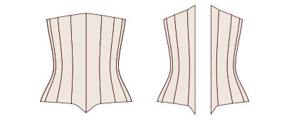
CORSET 036Sous-Poitrine Classique · 8 Panneaux · Bas en Double Pointe
Sous-poitrine victorien 10
 CORSET 037Sous-Poitrine Victorien · 6 Panneaux · Réduction de 6 cm
CORSET 037Sous-Poitrine Victorien · 6 Panneaux · Réduction de 6 cm- CORSET 038Sous-Poitrine Victorien · 6 Panneaux · Réduction de 8 cm
 CORSET 039Sous-Poitrine Victorien · 7 Panneaux · Réduction de 6 cm
CORSET 039Sous-Poitrine Victorien · 7 Panneaux · Réduction de 6 cm CORSET 040Sous-Poitrine Victorien · 7 Panneaux · Réduction de 8 cm
CORSET 040Sous-Poitrine Victorien · 7 Panneaux · Réduction de 8 cm CORSET 041Sous-Poitrine Victorien · 8 Panneaux · Réduction de 6 cm
CORSET 041Sous-Poitrine Victorien · 8 Panneaux · Réduction de 6 cm CORSET 042Sous-Poitrine Victorien · 8 Panneaux · Réduction de 8 cm
CORSET 042Sous-Poitrine Victorien · 8 Panneaux · Réduction de 8 cm CORSET 043Sous-Poitrine Victorien · 9 Panneaux · Réduction de 6 cm
CORSET 043Sous-Poitrine Victorien · 9 Panneaux · Réduction de 6 cm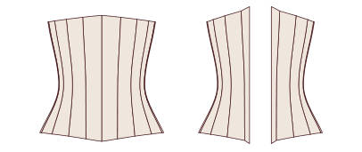
CORSET 044Sous-Poitrine Victorien · 9 Panneaux · Réduction de 8 cm CORSET 045Sous-Poitrine Victorien · 10 Panneaux · Réduction de 6 cm
CORSET 045Sous-Poitrine Victorien · 10 Panneaux · Réduction de 6 cm- CORSET 046Sous-Poitrine Victorien · 10 Panneaux · Réduction de 8 cm
Sous-poitrine édouardien 8
 CORSET 047Sous-Poitrine Édouardien à Devant Droit · 6 Panneaux · Bas Droit
CORSET 047Sous-Poitrine Édouardien à Devant Droit · 6 Panneaux · Bas Droit CORSET 048Sous-Poitrine Édouardien à Devant Droit · 6 Panneaux · Bas en Pointe
CORSET 048Sous-Poitrine Édouardien à Devant Droit · 6 Panneaux · Bas en Pointe CORSET 049Sous-Poitrine Édouardien à Devant Droit · 7 Panneaux · Bas Droit
CORSET 049Sous-Poitrine Édouardien à Devant Droit · 7 Panneaux · Bas Droit CORSET 050Sous-Poitrine Édouardien à Devant Droit · 7 Panneaux · Bas en Pointe
CORSET 050Sous-Poitrine Édouardien à Devant Droit · 7 Panneaux · Bas en Pointe CORSET 051Sous-Poitrine Édouardien à Devant Droit · 8 Panneaux · Bas Droit
CORSET 051Sous-Poitrine Édouardien à Devant Droit · 8 Panneaux · Bas Droit CORSET 052Sous-Poitrine Édouardien à Devant Droit · 8 Panneaux · Bas en Pointe
CORSET 052Sous-Poitrine Édouardien à Devant Droit · 8 Panneaux · Bas en Pointe CORSET 053Sous-Poitrine Édouardien à Devant Droit · 9 Panneaux · Bas Droit
CORSET 053Sous-Poitrine Édouardien à Devant Droit · 9 Panneaux · Bas Droit CORSET 054Sous-Poitrine Édouardien à Devant Droit · 9 Panneaux · Bas en Pointe
CORSET 054Sous-Poitrine Édouardien à Devant Droit · 9 Panneaux · Bas en Pointe
Sous-poitrine long 8
 CORSET 055Sous-Poitrine Long jusqu'aux Hanches · 6 Panneaux · Busc
CORSET 055Sous-Poitrine Long jusqu'aux Hanches · 6 Panneaux · Busc CORSET 056Sous-Poitrine Long jusqu'aux Hanches · 6 Panneaux · Laçage Devant
CORSET 056Sous-Poitrine Long jusqu'aux Hanches · 6 Panneaux · Laçage Devant CORSET 057Sous-Poitrine Long jusqu'aux Hanches · 7 Panneaux · Busc
CORSET 057Sous-Poitrine Long jusqu'aux Hanches · 7 Panneaux · Busc CORSET 058Sous-Poitrine Long jusqu'aux Hanches · 7 Panneaux · Laçage Devant
CORSET 058Sous-Poitrine Long jusqu'aux Hanches · 7 Panneaux · Laçage Devant CORSET 059Sous-Poitrine Long jusqu'aux Hanches · 8 Panneaux · Busc
CORSET 059Sous-Poitrine Long jusqu'aux Hanches · 8 Panneaux · Busc CORSET 060Sous-Poitrine Long jusqu'aux Hanches · 8 Panneaux · Laçage Devant
CORSET 060Sous-Poitrine Long jusqu'aux Hanches · 8 Panneaux · Laçage Devant CORSET 061Sous-Poitrine Long jusqu'aux Hanches · 9 Panneaux · Busc
CORSET 061Sous-Poitrine Long jusqu'aux Hanches · 9 Panneaux · Busc CORSET 062Sous-Poitrine Long jusqu'aux Hanches · 9 Panneaux · Laçage Devant
CORSET 062Sous-Poitrine Long jusqu'aux Hanches · 9 Panneaux · Laçage Devant
Bustier · décolleté droit 10
 CORSET 063Bustier Décolleté Droit · 6 Panneaux · Busc
CORSET 063Bustier Décolleté Droit · 6 Panneaux · Busc CORSET 064Bustier Décolleté Droit · 6 Panneaux · Laçage Devant
CORSET 064Bustier Décolleté Droit · 6 Panneaux · Laçage Devant CORSET 065Bustier Décolleté Droit · 7 Panneaux · Busc
CORSET 065Bustier Décolleté Droit · 7 Panneaux · Busc CORSET 066Bustier Décolleté Droit · 7 Panneaux · Laçage Devant
CORSET 066Bustier Décolleté Droit · 7 Panneaux · Laçage Devant CORSET 067Bustier Décolleté Droit · 8 Panneaux · Busc
CORSET 067Bustier Décolleté Droit · 8 Panneaux · Busc CORSET 068Bustier Décolleté Droit · 8 Panneaux · Laçage Devant
CORSET 068Bustier Décolleté Droit · 8 Panneaux · Laçage Devant CORSET 069Bustier Décolleté Droit · 9 Panneaux · Busc
CORSET 069Bustier Décolleté Droit · 9 Panneaux · Busc CORSET 070Bustier Décolleté Droit · 9 Panneaux · Laçage Devant
CORSET 070Bustier Décolleté Droit · 9 Panneaux · Laçage Devant CORSET 071Bustier Décolleté Droit · 10 Panneaux · Busc
CORSET 071Bustier Décolleté Droit · 10 Panneaux · Busc CORSET 072Bustier Décolleté Droit · 10 Panneaux · Laçage Devant
CORSET 072Bustier Décolleté Droit · 10 Panneaux · Laçage Devant
Bustier · décolleté cœur 10
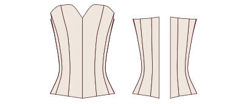
CORSET 073Bustier Décolleté Cœur · 6 Panneaux · Bas Droit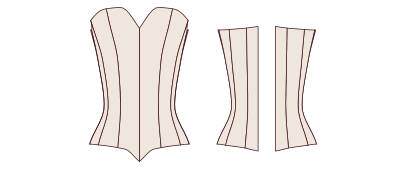
CORSET 074Bustier Décolleté Cœur · 6 Panneaux · Bas en Pointe CORSET 075Bustier Décolleté Cœur · 7 Panneaux · Bas Droit
CORSET 075Bustier Décolleté Cœur · 7 Panneaux · Bas Droit CORSET 076Bustier Décolleté Cœur · 7 Panneaux · Bas en Pointe
CORSET 076Bustier Décolleté Cœur · 7 Panneaux · Bas en Pointe CORSET 077Bustier Décolleté Cœur · 8 Panneaux · Bas Droit
CORSET 077Bustier Décolleté Cœur · 8 Panneaux · Bas Droit CORSET 078Bustier Décolleté Cœur · 8 Panneaux · Bas en Pointe
CORSET 078Bustier Décolleté Cœur · 8 Panneaux · Bas en Pointe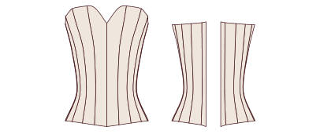
CORSET 079Bustier Décolleté Cœur · 9 Panneaux · Bas Droit CORSET 080Bustier Décolleté Cœur · 9 Panneaux · Bas en Pointe
CORSET 080Bustier Décolleté Cœur · 9 Panneaux · Bas en Pointe CORSET 081Bustier Décolleté Cœur · 10 Panneaux · Bas Droit
CORSET 081Bustier Décolleté Cœur · 10 Panneaux · Bas Droit CORSET 082Bustier Décolleté Cœur · 10 Panneaux · Bas en Pointe
CORSET 082Bustier Décolleté Cœur · 10 Panneaux · Bas en Pointe
Bustier · décolleté en V 8
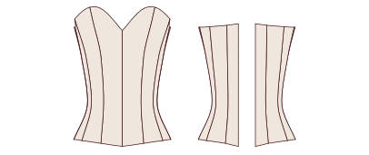
CORSET 083Bustier Décolleté en V Léger · 6 Panneaux CORSET 084Bustier Décolleté en V Profond · 6 Panneaux
CORSET 084Bustier Décolleté en V Profond · 6 Panneaux CORSET 085Bustier Décolleté en V Léger · 7 Panneaux
CORSET 085Bustier Décolleté en V Léger · 7 Panneaux CORSET 086Bustier Décolleté en V Profond · 7 Panneaux
CORSET 086Bustier Décolleté en V Profond · 7 Panneaux CORSET 087Bustier Décolleté en V Léger · 8 Panneaux
CORSET 087Bustier Décolleté en V Léger · 8 Panneaux CORSET 088Bustier Décolleté en V Profond · 8 Panneaux
CORSET 088Bustier Décolleté en V Profond · 8 Panneaux CORSET 089Bustier Décolleté en V Léger · 9 Panneaux
CORSET 089Bustier Décolleté en V Léger · 9 Panneaux CORSET 090Bustier Décolleté en V Profond · 9 Panneaux
CORSET 090Bustier Décolleté en V Profond · 9 Panneaux
Bustier · balconnet 8
 CORSET 091Bustier Balconnet · 6 Panneaux · Bas Droit
CORSET 091Bustier Balconnet · 6 Panneaux · Bas Droit CORSET 092Bustier Balconnet · 6 Panneaux · Bas en Pointe
CORSET 092Bustier Balconnet · 6 Panneaux · Bas en Pointe CORSET 093Bustier Balconnet · 7 Panneaux · Bas Droit
CORSET 093Bustier Balconnet · 7 Panneaux · Bas Droit CORSET 094Bustier Balconnet · 7 Panneaux · Bas en Pointe
CORSET 094Bustier Balconnet · 7 Panneaux · Bas en Pointe CORSET 095Bustier Balconnet · 8 Panneaux · Bas Droit
CORSET 095Bustier Balconnet · 8 Panneaux · Bas Droit CORSET 096Bustier Balconnet · 8 Panneaux · Bas en Pointe
CORSET 096Bustier Balconnet · 8 Panneaux · Bas en Pointe CORSET 097Bustier Balconnet · 9 Panneaux · Bas Droit
CORSET 097Bustier Balconnet · 9 Panneaux · Bas Droit CORSET 098Bustier Balconnet · 9 Panneaux · Bas en Pointe
CORSET 098Bustier Balconnet · 9 Panneaux · Bas en Pointe
Corselet à bretelles 6
 CORSET 099Corselet à Bretelles Fines · 6 Panneaux
CORSET 099Corselet à Bretelles Fines · 6 Panneaux CORSET 100Corselet à Bretelles Larges · 6 Panneaux
CORSET 100Corselet à Bretelles Larges · 6 Panneaux CORSET 101Corselet à Bretelles Fines · 7 Panneaux
CORSET 101Corselet à Bretelles Fines · 7 Panneaux CORSET 102Corselet à Bretelles Larges · 7 Panneaux
CORSET 102Corselet à Bretelles Larges · 7 Panneaux CORSET 103Corselet à Bretelles Fines · 8 Panneaux
CORSET 103Corselet à Bretelles Fines · 8 Panneaux CORSET 104Corselet à Bretelles Larges · 8 Panneaux
CORSET 104Corselet à Bretelles Larges · 8 Panneaux
Laçage devant et dos 6
 CORSET 105Sous-Poitrine Laçage Devant et Dos · 6 Panneaux
CORSET 105Sous-Poitrine Laçage Devant et Dos · 6 Panneaux CORSET 106Bustier Laçage Devant et Dos · 6 Panneaux
CORSET 106Bustier Laçage Devant et Dos · 6 Panneaux CORSET 107Sous-Poitrine Laçage Devant et Dos · 7 Panneaux
CORSET 107Sous-Poitrine Laçage Devant et Dos · 7 Panneaux CORSET 108Bustier Laçage Devant et Dos · 7 Panneaux
CORSET 108Bustier Laçage Devant et Dos · 7 Panneaux CORSET 109Sous-Poitrine Laçage Devant et Dos · 8 Panneaux
CORSET 109Sous-Poitrine Laçage Devant et Dos · 8 Panneaux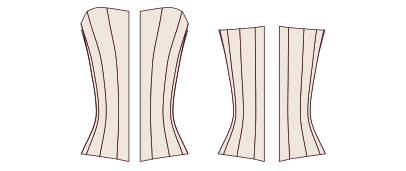
CORSET 110Bustier Laçage Devant et Dos · 8 Panneaux
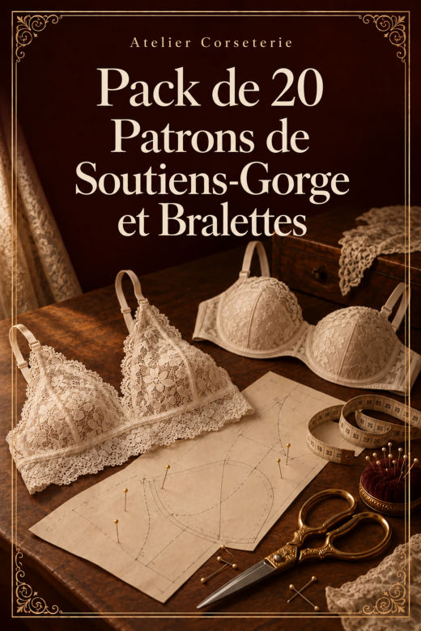
Bonus IV · Pack de 20 Patrons de Soutiens-Gorge et Bralettes
20 patrons en PDF · chacun en A4 par parties et pour traceur en taille réelle.
Triangle 6
 SOUTIEN 001Bralette Triangle Classique
SOUTIEN 001Bralette Triangle Classique SOUTIEN 002Bralette Triangle à Bande Large
SOUTIEN 002Bralette Triangle à Bande Large SOUTIEN 003Bralette Triangle à Dos Croisé
SOUTIEN 003Bralette Triangle à Dos Croisé SOUTIEN 004Bralette Triangle à Bretelles Doubles
SOUTIEN 004Bralette Triangle à Bretelles Doubles SOUTIEN 005Bralette Triangle en Dentelle Festonnée
SOUTIEN 005Bralette Triangle en Dentelle Festonnée SOUTIEN 006Bralette Triangle Coulissant à Nouer
SOUTIEN 006Bralette Triangle Coulissant à Nouer
Col américain 2
 SOUTIEN 007Bralette Col Américain Nouée au Cou
SOUTIEN 007Bralette Col Américain Nouée au Cou SOUTIEN 008Bralette Col Américain à Bande
SOUTIEN 008Bralette Col Américain à Bande
Décolleté en V et croisés 2
 SOUTIEN 009Bralette Décolleté en V Profond
SOUTIEN 009Bralette Décolleté en V Profond SOUTIEN 010Bralette Croisée Devant
SOUTIEN 010Bralette Croisée Devant
Longline 2
 SOUTIEN 011Bralette Longline Droite
SOUTIEN 011Bralette Longline Droite SOUTIEN 012Bralette Longline en V
SOUTIEN 012Bralette Longline en V
Bandeau 2
 SOUTIEN 013Bandeau Uni
SOUTIEN 013Bandeau Uni SOUTIEN 014Bandeau Froncé au Centre
SOUTIEN 014Bandeau Froncé au Centre
À bonnet construit 4
 SOUTIEN 015Soutien-Gorge Balconnet sans Armatures (Bonnet 3 Pièces)
SOUTIEN 015Soutien-Gorge Balconnet sans Armatures (Bonnet 3 Pièces)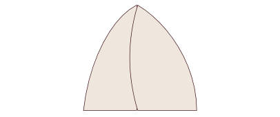
SOUTIEN 016Soutien-Gorge à Couture Verticale sans Armatures SOUTIEN 017Soutien-Gorge à Bonnet d'une Pièce sans Armatures
SOUTIEN 017Soutien-Gorge à Bonnet d'une Pièce sans Armatures SOUTIEN 018Soutien-Gorge en Dentelle, Bonnet 2 Pièces
SOUTIEN 018Soutien-Gorge en Dentelle, Bonnet 2 Pièces
Brassières de sport 2
 SOUTIEN 019Brassière de Sport Dos Nageur
SOUTIEN 019Brassière de Sport Dos Nageur SOUTIEN 020Brassière de Sport Dos Croisé
SOUTIEN 020Brassière de Sport Dos Croisé
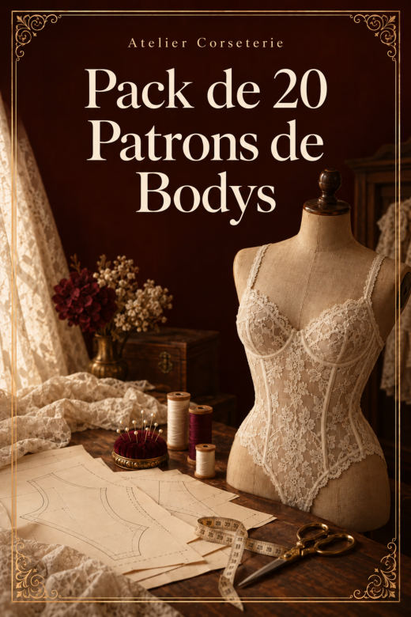
Bonus V · Pack de 20 Patrons de Bodys
20 patrons en PDF · chacun en A4 par parties et pour traceur en taille réelle.
Bodys 20
 BODY 001Body Décolleté Rond · Dos Fermé
BODY 001Body Décolleté Rond · Dos Fermé BODY 002Body Décolleté Rond · Dos Échancré
BODY 002Body Décolleté Rond · Dos Échancré BODY 003Body Décolleté Rond · Dos Croisé
BODY 003Body Décolleté Rond · Dos Croisé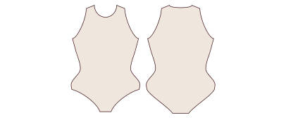
BODY 004Body Décolleté Rond · Dos Ouvert en Goutte BODY 005Body Décolleté en V · Dos Fermé
BODY 005Body Décolleté en V · Dos Fermé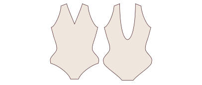
BODY 006Body Décolleté en V · Dos Échancré BODY 007Body Décolleté en V · Dos Croisé
BODY 007Body Décolleté en V · Dos Croisé BODY 008Body Décolleté en V · Dos Ouvert en Goutte
BODY 008Body Décolleté en V · Dos Ouvert en Goutte BODY 009Body Décolleté Carré · Dos Fermé
BODY 009Body Décolleté Carré · Dos Fermé BODY 010Body Décolleté Carré · Dos Échancré
BODY 010Body Décolleté Carré · Dos Échancré BODY 011Body Décolleté Carré · Dos Croisé
BODY 011Body Décolleté Carré · Dos Croisé BODY 012Body Décolleté Carré · Dos Ouvert en Goutte
BODY 012Body Décolleté Carré · Dos Ouvert en Goutte BODY 013Body Décolleté Cœur · Dos Fermé
BODY 013Body Décolleté Cœur · Dos Fermé BODY 014Body Décolleté Cœur · Dos Échancré
BODY 014Body Décolleté Cœur · Dos Échancré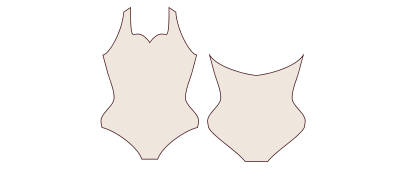
BODY 015Body Décolleté Cœur · Dos Croisé BODY 016Body Décolleté Cœur · Dos Ouvert en Goutte
BODY 016Body Décolleté Cœur · Dos Ouvert en Goutte BODY 017Body Col Américain · Dos Fermé
BODY 017Body Col Américain · Dos Fermé BODY 018Body Col Américain · Dos Échancré
BODY 018Body Col Américain · Dos Échancré BODY 019Body Col Américain · Dos Croisé
BODY 019Body Col Américain · Dos Croisé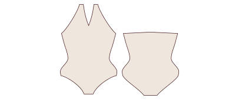
BODY 020Body Col Américain · Dos Ouvert en Goutte
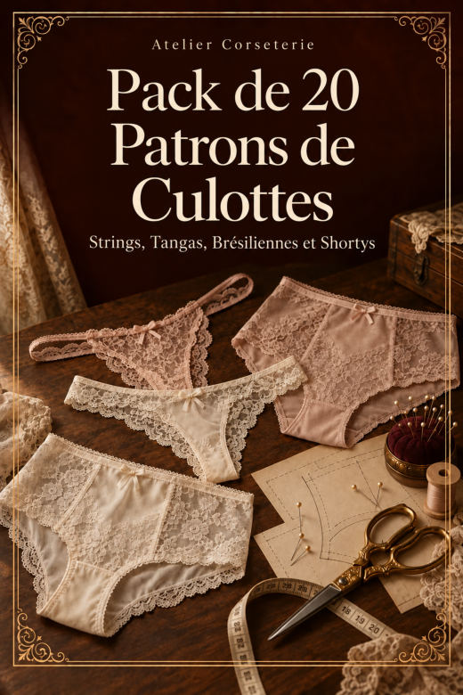
Bonus VI · Pack de 20 Patrons de Culottes : Strings, Tangas, Brésiliennes et Shortys
20 patrons en PDF · chacun en A4 par parties et pour traceur en taille réelle.
Strings 5
 CULOTTE 001String Classique
CULOTTE 001String Classique CULOTTE 002String Taille Haute
CULOTTE 002String Taille Haute CULOTTE 003String à Lanières Latérales
CULOTTE 003String à Lanières Latérales CULOTTE 004String en Dentelle à Devant Doublé
CULOTTE 004String en Dentelle à Devant Doublé CULOTTE 005String Brésilien en V
CULOTTE 005String Brésilien en V
Tangas 5
 CULOTTE 006Tanga Classique Taille Basse
CULOTTE 006Tanga Classique Taille Basse CULOTTE 007Tanga Taille Mi-Haute
CULOTTE 007Tanga Taille Mi-Haute CULOTTE 008Tanga à Côtés Larges
CULOTTE 008Tanga à Côtés Larges CULOTTE 009Tanga Brésilien Échancré
CULOTTE 009Tanga Brésilien Échancré CULOTTE 010Tanga à Doubles Lanières
CULOTTE 010Tanga à Doubles Lanières
Brésiliennes 5
 CULOTTE 011Culotte Brésilienne Classique
CULOTTE 011Culotte Brésilienne Classique CULOTTE 012Culotte Brésilienne Taille Haute
CULOTTE 012Culotte Brésilienne Taille Haute CULOTTE 013Culotte Brésilienne Échancrée
CULOTTE 013Culotte Brésilienne Échancrée CULOTTE 014Culotte Brésilienne à Côtés en Dentelle
CULOTTE 014Culotte Brésilienne à Côtés en Dentelle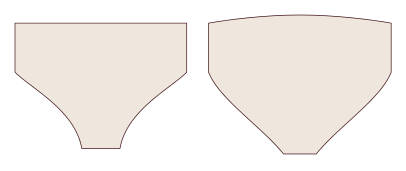
CULOTTE 015Culotte Brésilienne Rétro Taille Haute
Shortys 5
 CULOTTE 016Shorty Classique
CULOTTE 016Shorty Classique CULOTTE 017Shorty Taille Haute
CULOTTE 017Shorty Taille Haute CULOTTE 018Shorty Jambe Droite
CULOTTE 018Shorty Jambe Droite CULOTTE 019Shorty en Dentelle Festonnée
CULOTTE 019Shorty en Dentelle Festonnée CULOTTE 020Shorty Boxer
CULOTTE 020Shorty Boxer
Prochaine étape
Ajoutez cette page à vos favoris : c'est votre accès à vie à la collection. Choisissez votre premier patron, imprimez-le et commencez par la toile.